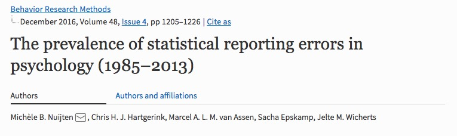

2022-02-23 16:45:12
Preliminaries
About me
- Professor of Psychology
- Founding Director of Human Imaging, PSU SLEIC
- Co-Founder/Co-Director Databrary.org
- B.A. in cognitive science, Brown University
- Ph.D. in cognitive neuroscience, Carnegie Mellon University
- vision, perception & action, brain development, open science
- ham radio operator (K3ROG), actor/singer, banjo-picker, hiker/cyclist, coder
Overview
- Reproducibility in science
- Getting it wrong…and getting it right
- How to do better
Reproducibility in science
What proportion of studies in the published scientific literature are actually true?
- 100%
- 90%
- 70%
- 50%
- 30%
How do we define what “actually true” means?
Is there a reproducibility crisis in science?
- Yes, a significant crisis
- Yes, a slight crisis
- No crisis
- Don’t know

![[[@baker_1500_2016]](http://doi.org/10.1038/533452a)](https://media.springernature.com/w300/springer-static/image/art%3A10.1038%2F533452a/MediaObjects/41586_2016_BF533452a_Fige_HTML.jpg?as=webp)
What does “reproducibility” mean?
- Are we all talking about the same thing?
Methods reproducibility
- Enough details about materials & methods recorded (& reported) so that
- Same results with same materials & methods

Results reproducibility
- Same results from independent study
Inferential reproducibility
- Same inferences from one or more studies or reanalyses
- Meta- or mega-analyses
Factors contributing to irreproducible research
![[[@baker_1500_2016]](http://doi.org/10.1038/533452a)](http://www.nature.com/polopoly_fs/7.36719.1464174488!/image/reproducibility-graphic-online4.jpg_gen/derivatives/landscape_630/reproducibility-graphic-online4.jpg)
Reproducibility crisis
- Not just psychology and related behavioral sciences
- “Hard” sciences, too
- Challenges affect data collection to statistical analysis to reporting to publishing

Getting it wrong…and getting it right
False positives & false negatives
Underpowered studies
“Assuming a realistic range of prior probabilities for null hypotheses, false report probability is likely to exceed 50% for the whole literature.”
Getting the stats right…

![[[@Nuijten2015-ul]](https://doi.org10.3758/s13428-015-0664-2)](https://static-content.springer.com/image/art%3A10.3758%2Fs13428-015-0664-2/MediaObjects/13428_2015_664_Fig3_HTML.gif)
The toothbrush problem…

“…psychologists tend to treat other peoples’ theories like toothbrushes; no self-respecting individual wants to use anyone else’s.”
“The toothbrush culture undermines the building of a genuinely cumulative science, encouraging more parallel play and solo game playing, rather than building on each other’s directly relevant best work.”
Openness, transparency, data and materials sharing are unrewarded…
“Reviewers and editors want novel, interesting results. Why would I waste my time doing careful direct replications?”
“Reviewing papers is hard, unpaid work. If I have to check someone’s stats, too, I’ll quit.”
– Any number of researchers I’ve talked with
To share or not to share…
![[[@wicherts_poor_2006]](http://doi.org/10.1037/0003-066X.61.7.726)](https://raw.githubusercontent.com/gilmore-lab/psu-data-repro-bootcamp-2017-07-10/master/img/wicherts_2006_amp_61_7_726_fig1a.jpg)
(Vanpaemel, Vermorgen, Deriemaecker, & Storms, 2015)
| Response | Percent |
|---|---|
| No reply | 41% |
| Refused/unable to share data | 18% |
| No data despite promise | 4% |
| Data shared after reminder | 16% |
| Data shared after 1st request | 22% |
(Errington, Denis, Perfito, Iorns, & Nosek, 2021)

(Errington et al., 2021)
“The initial aim of the project was to repeat 193 experiments from 53 high-impact papers, using an approach in which the experimental protocols and plans for data analysis had to be peer reviewed and accepted for publication before experimental work could begin. However, the various barriers and challenges we encountered while designing and conducting the experiments meant that we were only able to repeat 50 experiments from 23 papers.”
“While authors were extremely or very helpful for 41% of experiments, they were minimally helpful for 9% of experiments, and not at all helpful (or did not respond to us) for 32% of experiments. Third, once experimental work started, 67% of the peer-reviewed protocols required modifications to complete the research and just 41% of those modifications could be implemented.”
“This experience draws attention to a basic and fundamental concern about replication – it is hard to assess whether reported findings are credible”
How to do better
![[[@munafo_manifesto_2017]](http://doi.org/10.1038/s41562-016-0021)](https://media.springernature.com/full/springer-static/image/art%3A10.1038%2Fs41562-016-0021/MediaObjects/41562_2016_Article_BFs415620160021_Fig1_HTML.jpg?as=webp)
Reproducibility in psychological science
- Bigger samples
- Multiple replications
- Registration
- Data, procedure, and materials sharing
- “Data blinding”
- Larg(er)-scale replication studies
Reproducibility Project: Psychology (RPP)
“We conducted replications of 100…studies published in three psychology journals using high-powered designs and original materials when available….The mean effect size (r) of the replication effects …was half the magnitude of the mean effect size of the original effects…”
“Ninety-seven percent of original studies had significant results (p < .05). Thirty-six percent of replications had significant results.”
“39% of effects were subjectively rated to have replicated the original result…”
(Camerer et al., 2018)
![[[@Camerer2018-tr]](Camerer2018-tr)](https://mfr.osf.io/export?url=https://osf.io/fg4d3/?action=download%26mode=render%26direct%26public_file=True&initialWidth=711&childId=mfrIframe&parentTitle=OSF+%7C+F1+-+EffectSizes.png&parentUrl=https://osf.io/fg4d3/&format=2400x2400.jpeg)
![[[@Camerer2018-tr]](Camerer2018-tr)](https://mfr.osf.io/export?url=https://osf.io/cefq7/?action=download%26mode=render%26direct%26public_file=True&initialWidth=680&childId=mfrIframe&parentTitle=OSF+%7C+F4+-+PeerBeliefs.png&parentUrl=https://osf.io/cefq7/&format=2400x2400.jpeg)
Video as data and documentation

Play & Learning Across a Year (PLAY Project)
- https://play-project.org
- “An hour in the life” of 1,000 families
- (Hyper)active data curation… (Soska et al., 2021)
Improved statistical practices
- Automated checking of paper statistics (in American Psychological Association formats) via Statcheck
- Redefine “statistical significance” as \(p<.005\)? (Benjamin et al., 2017)
- Or move away from NHST toward more robust and cumulative practices (Bayesian, CI/effect-size-driven) - Better capture what we know or think we know
Store data, materials, code in repositories
- Data libraries
- Funder, journal mandates for sharing increasing
- But no long-term, stable, funding sources for curation, archiving, sharing
Script analyses, version control
- RMarkdown, Jupyter notebooks
- GitHub
Open from the beginning…

Science as a way of knowing…
- What do we know
- How do we know it?
- How do we share what we know (and how we know it)?
- Why should we (or others) care?
Resources
This talk was produced on 2022-02-23 in RStudio using R Markdown. The code and materials used to generate the slides may be found at https://github.com/gilmore-lab/2022-02-23-psi-chi/. Information about the R Session that produced the code is as follows:
## R version 4.1.2 (2021-11-01) ## Platform: x86_64-apple-darwin17.0 (64-bit) ## Running under: macOS Monterey 12.2.1 ## ## Matrix products: default ## LAPACK: /Library/Frameworks/R.framework/Versions/4.1/Resources/lib/libRlapack.dylib ## ## locale: ## [1] en_US.UTF-8/en_US.UTF-8/en_US.UTF-8/C/en_US.UTF-8/en_US.UTF-8 ## ## attached base packages: ## [1] stats graphics grDevices utils datasets methods ## [7] base ## ## loaded via a namespace (and not attached): ## [1] png_0.1-7 digest_0.6.29 R6_2.5.1 ## [4] jsonlite_1.7.2 magrittr_2.0.1 evaluate_0.14 ## [7] highr_0.9 rlang_0.4.12 stringi_1.7.6 ## [10] jquerylib_0.1.4 bslib_0.3.1 rmarkdown_2.11 ## [13] tools_4.1.2 stringr_1.4.0 xfun_0.29 ## [16] yaml_2.2.1 fastmap_1.1.0 compiler_4.1.2 ## [19] htmltools_0.5.2 knitr_1.37 sass_0.4.0
References
Baker, M. (2016). 1,500 scientists lift the lid on reproducibility. Nature News, 533(7604), 452. https://doi.org/10.1038/533452a
Camerer, C. F., Dreber, A., Holzmeister, F., Ho, T.-H., Huber, J., Johannesson, M., … Wu, H. (2018). Evaluating the replicability of social science experiments in nature and science between 2010 and 2015. Nature Human Behaviour, 1. https://doi.org/10.1038/s41562-018-0399-z
Collaboration, O. S. (2015). Estimating the reproducibility of psychological. Science, 349(6251), aac4716. https://doi.org/10.1126/science.aac4716
Errington, T. M., Denis, A., Perfito, N., Iorns, E., & Nosek, B. A. (2021). Challenges for assessing replicability in preclinical cancer biology. eLife, 10, e67995. https://doi.org/10.7554/eLife.67995
Goodman, S. N., Fanelli, D., & Ioannidis, J. P. A. (2016). What does research reproducibility mean? Science Translational Medicine, 8(341), 341ps12–341ps12. https://doi.org/10.1126/scitranslmed.aaf5027
Mischel, W. (2011). Becoming a cumulative science. APS Observer, 22(1). Retrieved from https://www.psychologicalscience.org/observer/becoming-a-cumulative-science
Munafò, M. R., Nosek, B. A., Bishop, D. V. M., Button, K. S., Chambers, C. D., Sert, N. P. du, … Ioannidis, J. P. A. (2017). A manifesto for reproducible science. Nature Human Behaviour, 1, 0021. https://doi.org/10.1038/s41562-016-0021
Nuijten, M. B., Hartgerink, C. H. J., Assen, M. A. L. M. van, Epskamp, S., & Wicherts, J. M. (2015). The prevalence of statistical reporting errors in psychology (1985–2013). Behavior Research Methods, 1–22. https://doi.org/10.3758/s13428-015-0664-2
Soska, K. C., Xu, M., Gonzalez, S. L., Herzberg, O., Tamis-LeMonda, C. S., Gilmore, R. O., & Adolph, K. E. (2021). (Hyper)active data curation: A video case study from behavioral science. Journal of Escience Librarianship, 10(3). https://doi.org/10.7191/jeslib.2021.1208
Szucs, D., & Ioannidis, J. P. A. (2017). Empirical assessment of published effect sizes and power in the recent cognitive neuroscience and psychology literature. PLoS Biology, 15(3), e2000797. https://doi.org/10.1371/journal.pbio.2000797
Vanpaemel, W., Vermorgen, M., Deriemaecker, L., & Storms, G. (2015). Are we wasting a good crisis? The availability of psychological research data after the storm. Collabra, 1(1). https://doi.org/10.1525/collabra.13
Wicherts, J. M., Borsboom, D., Kats, J., & Molenaar, D. (2006). The poor availability of psychological research data for reanalysis. American Psychologist, 61(7), 726–728. https://doi.org/10.1037/0003-066X.61.7.726